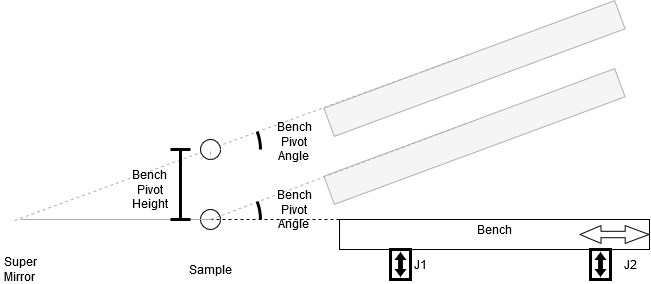

Bench Configuration
The bench and theta interactions are particularly difficult to set up this page should explain that setup. The bench is as follows:

The configuration is:
# Theta
# -----
# (This is the component which specifies and reads theta, not the bench angle but coupled to it)
z_sample = 584
# theta component
theta_comp = add_component(ThetaComponent("ThetaComp", PositionAndAngle(0.0, z_sample, 90)))
# parameters allowing it to be set and read.
theta_param_angle = add_parameter(AxisParameter("THETA", theta_comp, ChangeAxis.ANGLE, autosave=False), modes=[nr])
# Bench
# -----
# constants
z_bench_pivot = z_sample # position the bench pivots around in this case the sample
z_bench_front = z_bench_pivot + 1201 # front of bench (in this case it is 1201 away from the sample)
z_bench_pivot_to_front_jack = 1201 # jack is also at the front of the bench
z_bench_pivot_to_rear_jack = z_bench_pivot_to_front_jack + 1558.0 # rear jack is spaced 1558 from front jack
angle_of_bench = 2.3 # the angle of the bench so when it is aligned with a optical level this is included
bench_pivot_to_beam = 628 # distance from the bench surface to the beam above the bench
min_angle_for_slide = 0.0 # min angle below which the slide won't move
max_angle_for_slide = 4.8 # max angle above which the slide won't move
# bench component
bench = add_component(BenchComponent("bench", BenchSetup(0.0, z_sample, 90,
z_bench_pivot_to_front_jack, z_bench_pivot_to_rear_jack,
angle_of_bench, bench_pivot_to_beam,
min_angle_for_slide, max_angle_for_slide)))
# parameters to set angle, offset, seesaw and chi of bench
add_parameter(AxisParameter("BENCH_ANGLE", bench, ChangeAxis.ANGLE, autosave=True), modes=all_modes)
add_parameter(AxisParameter("BENCH_OFFSET", bench, ChangeAxis.POSITION), modes=all_modes)
add_parameter(AxisParameter("BENCH_SEESAW", bench, ChangeAxis.SEESAW, autosave=True), modes=all_modes)
add_parameter(AxisParameter("BENCH_CHI", bench, ChangeAxis.CHI), modes=all_modes)
# Drivers to move the bench jacks, horizontal slide and shi
add_driver(IocDriver(bench, ChangeAxis.JACK_FRONT, MotorPVWrapper("MOT:MTR0801")))
add_driver(IocDriver(bench, ChangeAxis.JACK_REAR, MotorPVWrapper("MOT:MTR0802")))
add_driver(IocDriver(bench, ChangeAxis.SLIDE, MotorPVWrapper("MOT:MTR0803")))
add_driver(IocDriver(bench, ChangeAxis.CHI, MotorPVWrapper("MOT:MTR0804")))
# finally point theta at the bench angle
theta_comp.add_angle_of(bench)
Items to note:
Bench position in z is the place we want to pivot about not the front of the bench. So for a bench following the sample this is the sample point. In the case of a forward bench I think it will pivot around the super mirror but we haven’t talked about this with instrument scientists.
The bench angle is the angle is makes with the incoming beam this is usually zero
The seesaw parameter MUST be autosaved; this is because seesaw and angle are both defined by the relative jack positions
The bench offset is the vertical offset of the bench.
The line of the config points theta at the bench so either theta or the the angle must be autosaved so that the other can be calculated